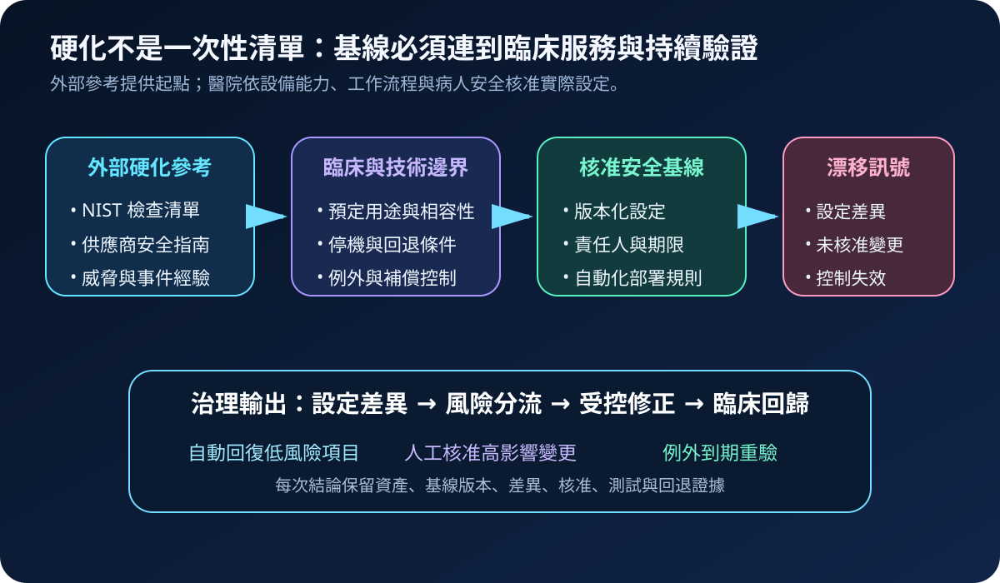
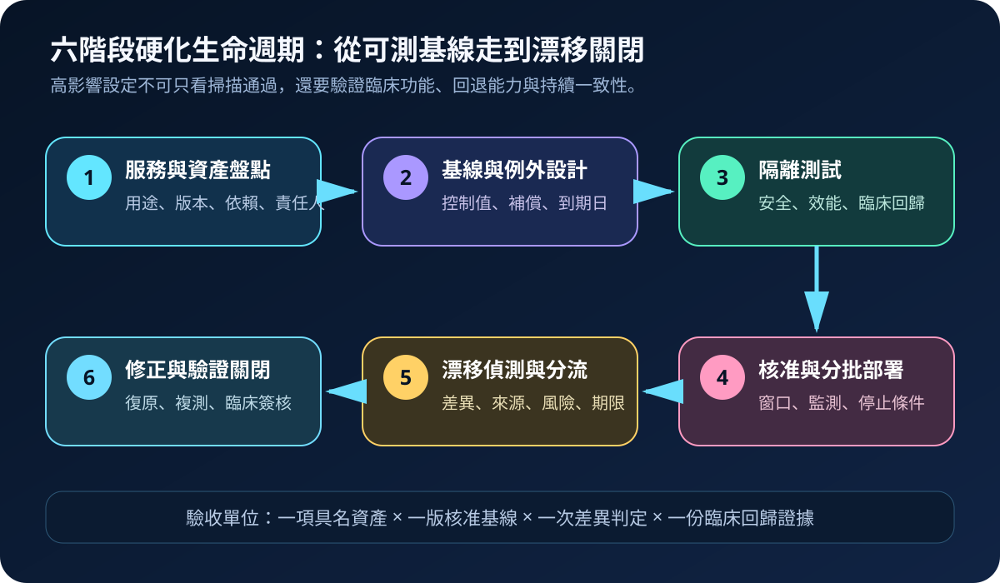
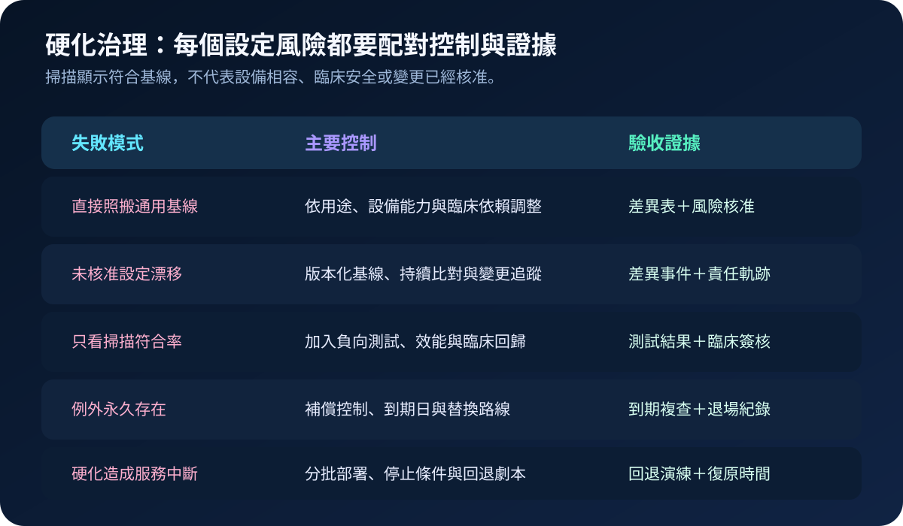

醫療資安國際觀察 · 2026-10-23
醫療系統硬化如何避免設定漂移：從安全基線到臨床回歸
作者：Dr. William｜醫療資訊與資安治理實務工作者
系統硬化把不必要服務、預設帳號、寬鬆權限與不安全通訊收斂到核准狀態；設定漂移則是實際組態偏離核准基線。醫院若只在建置或稽核前掃描一次，日常維護、供應商遠端處理與緊急修復仍可能讓控制逐步失效。
名詞解釋：安全基線不是所有設備套同一份設定
系統硬化是降低可被利用功能與權限的過程；安全基線是經核准、版本化且可重建的設定集合；設定漂移是實際狀態與基線的差異。醫療設備、核心系統、雲端服務與一般端點的用途及相容性不同，基線必須保留適用範圍、例外理由、補償控制與到期日。
國際現況與適用邊界
美國 HHS OCR 於 2026 年 1 月資安通訊說明系統強化，將組態管理、安全檢查清單、變更控制與持續監測列為降低電子受保護健康資訊風險的重要方法。NIST 的 National Checklist Program 提供公開安全組態檢查清單及使用說明，頁面於 2026 年 4 月更新。CISA 的 Healthcare and Public Health Mitigation Guide 則將資產、身分、弱點、備份與事件應變控制整合到醫療部門風險降低路線。
台灣適用原則：HHS HIPAA Security Rule 的義務適用於美國受規範實體及其商業夥伴，不是台灣醫療機構的直接法定要求；NIST 與 CISA 文件屬治理與技術參考。台灣醫院可採用其基線、變更與監測方法，但仍須依台灣法令、主管機關要求、醫療器材預定用途、院內臨床治理及契約責任決定控制強度。
規劃：把基線變成可維護的治理物件
範圍宜先涵蓋身分平台、對外服務、核心醫療資訊系統、管理伺服器、備份平台與可遠端維護的醫療設備。每份基線至少記錄資產類型、作業系統或韌體版本、設定值、來源依據、核准者、測試結果、例外、補償控制、部署方式及重驗週期。驗收指標可包含基線覆蓋率、漂移發現時間、未核准差異關閉時間、逾期例外數、分批部署成功率、臨床回歸通過率與回退時間。
實作：六階段建立硬化閉環
- 盤點：以具名資產、版本、用途、臨床依賴與責任單位建立範圍。
- 設計：將 NIST、供應商與院內要求轉成版本化基線，標示不適用項目與補償控制。
- 測試：在隔離環境驗證安全效果、設備相容性、效能、介接與臨床工作流程。
- 部署：經變更核准後分批套用，設定觀察窗口、停止條件與回退劇本。
- 監測：持續比對實際狀態與核准版本，辨識維護、緊急處理或未授權變更造成的漂移。
- 關閉：依風險自動回復、人工修正或核准限期例外，完成技術複測、臨床回歸與證據保存。

風險：過度硬化與放任漂移都會影響照護
常見失敗包括直接照搬通用基線、掃描工具未涵蓋醫療設備、緊急維護後未恢復控制、例外永久化，以及停用服務或通訊協定造成介接中斷。緩解方式包括以服務情境調整設定、保存變更來源、對高影響差異採雙人核准、設定例外到期日、進行負向測試，並在分批部署中持續監測臨床錯誤率、介接延遲與回退時間。

可執行清單
- 高影響系統是否已有具名、版本化且可重建的安全基線？
- 每項設定是否標示適用範圍、臨床依賴與供應商限制？
- 例外是否包含補償控制、責任人、到期日與替換路線？
- 漂移訊號能否連到實際資產、變更單與維護工作？
- 高影響修正是否完成隔離測試、分批部署與停止條件驗證？
- 關閉前是否保留技術複測、臨床回歸與回退能力證據？
來源
- HHS OCR｜January 2026 Cybersecurity Newsletter: System Hardening（發布：2026-01；查閱：2026-10-23）
- NIST｜Security Configuration Checklists for Commercial IT Products（更新：2026-04-08；查閱：2026-10-23）
- CISA｜Cross-Sector Cybersecurity Performance Goals（跨部門資安基線；查閱：2026-10-23）
- HHS OCR｜The Security Rule（適用範圍說明；查閱：2026-10-23）
內容說明
本文依健康台灣深耕計畫相關治理內容整理，並參考 HHS、NIST 與 CISA 公開資料，提出安全基線、例外期限、漂移偵測、分批部署與臨床回歸方法；不把美國法規或國外指南視為台灣法定義務，也不取代主管機關公告、醫療器材說明、院內臨床治理或法律意見。